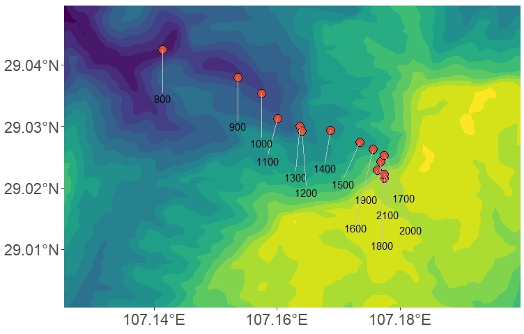
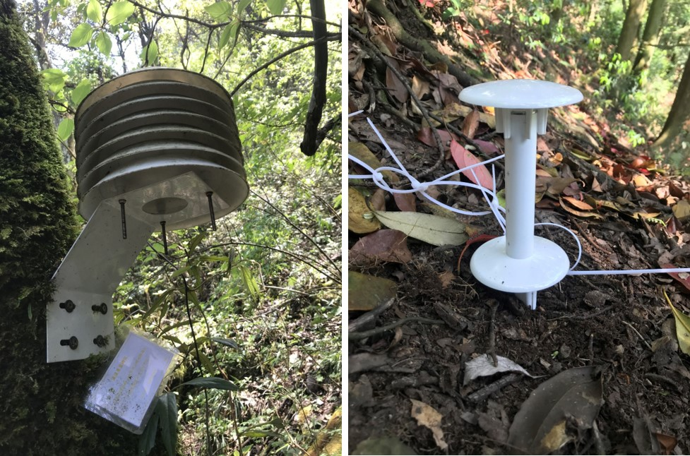

Mt. Jinfoshan is located in Chongqing, China. A majority of the mountain is located within Mt. Jinfo National Nature Reserve (29°01′～29°03′N, 107°08′～107°12′E), and has a total area of 1300 km2. It belongs to the transition zone from the Yunnan-Guizhou Plateau to the Sichuan Basin. Jinfo Mountain had been home to some relict plants, e.g. Silver Fir (Cathaya argyrophylla), Ginkgo (Ginkgo biloba), Davidia (Davidia involucrate) etc., in the Quaternary glacial. The mountain peak is at 2,238 m asl., and the difference in altitude can reach 1,600 m.
There is an obvious vertical variation of the climatic zone as elevation rising. The temperature difference from the foot of the mountain to the top can reach 8-9℃. Vertical variation can also be observed in the soil type and vegetation. As elevation rising, the soil changes from yellow soil, yellow brown soil, to brown soil gradually. Vegetation changes from moist evergreen broad-leaved forest, coniferous forest, coniferous and broad-leaved mixed forest, to deciduous evergreen broad-leaved and bamboo as elevation rising.
The forest coverage of Jinfo Mountain reaches 96%. There are more than 5000 species of plant in 237 families, including more than 250 species of ancient plants, 136 species of endemic plants, and 82 species of rare and endangered plants. Among them, e.g. Cathaya argyrophylla Chun et Kuang, Ginkgo biloba L., Camellia sinensis ( Linn.) var. assamica (Masters) Kitamura et al. belong to the national first-class protected plants.
There are ~150 species of wild animals in Jinfo Mountain. Among them, there are 37 species of rare species.
In 2017, fourteen 20 m × 20 m plots along an elevational gradient were set up from 800 m to 2100 m asl. in this mountain. The plots were set at intervals of ~100 m in elevation. Within each plot, all woody stems with ≥ 1 cm DBH were tagged and identified to species.


Yongchuan (杨永川): ycyang@cqu.edu.cn
Research Team:
Dr. Xianjin He (Chongqing University)
Dr. Guangyu Zhu (Chongqing University)
Lihua Zhou (PhD student at Chongqing University)
Qian SH, Tang CQ, Yi SR, Zhao L, et al. Conservation and development in conflict: regeneration of wild Davidia involucrata (Nyssaceae) communities weakened by bamboo management in south-central China. Oryx, 2018, 52(3), 442–451.
Qian SH, Tang CQ, Yang YC, et al. Effective conservation measures are needed for wild Cathaya argyrophylla populations in China: Insights from the population structure and regeneration characteristics. Forest Ecology and Management, 2016, 361(3): 358–367.
周礼华, 黄力, 钱深华, 李莉, 杨永川. 金佛山西坡气温的垂直变化特征. 山地学报, 2019, 37(6): 818-827.
This site has been supported by:
{kind=link}
{kind=link}